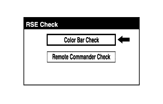
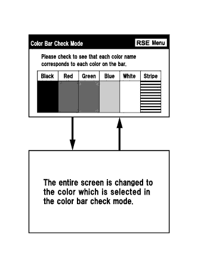
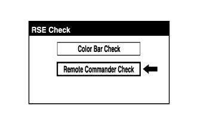
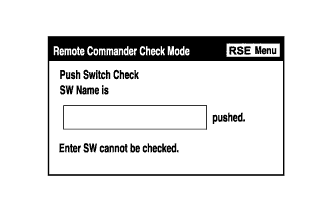

REAR SEAT ENTERTAINMENT SYSTEM > OPERATION CHECK |
| ENTER DIAGNOSTIC MODE |
Enter diagnostic mode.
Navigation System (for DVD): Click here
Navigation System (for HDD): Click here
| RSE CHECK |
Color Bar Check
|  |
Select "Color Bar Check" from the "RSE Check" screen.
|  |
Select a color bar from the "Color Bar Check Mode" screen.
Check the display color.
Remote Commander Check
|  |
Select "Remote Commander Check" from the "RSE Check" screen.
|  |
Operate each switch and check that the switch name and condition are correctly displayed.